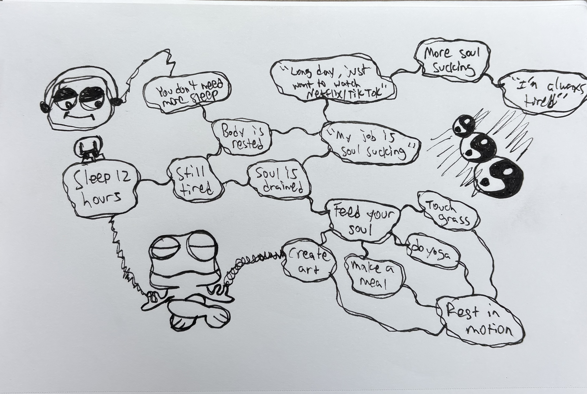

The Frequency
Rest in Motion is a piece that explores what it truly means to rest in the digital age. Why do we sleep 12 hours and find that we are still tired? It's simple - our soul is drained. While our body is rested, our soul is empty. We work soul-sucking jobs and 'rest' by watching TikTok and Netflix, which drains us further. We're always tired.
These corporations are selling us relaxation in the form of passive consumption - when the real answer is to feed our souls. To rest in motion. To do more, not less. To find the activities that give us energy: creating art, making a meal, doing yoga, touching grass, whatever it might be for each of us.

Rest in Motion was created in September 2025 at Same Same But Different Music Festival, where I received this consciousness download of resting in motion. During the process I was dancing and painting and accidentally punched a hole through the canvas - representing the pure energy and passion that went into this piece.